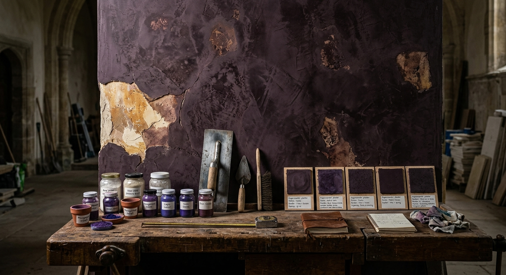
Paint & Plaster
Pigments, binders, plaster, texture, preparation, application, repair, finish and the techniques behind the surface.
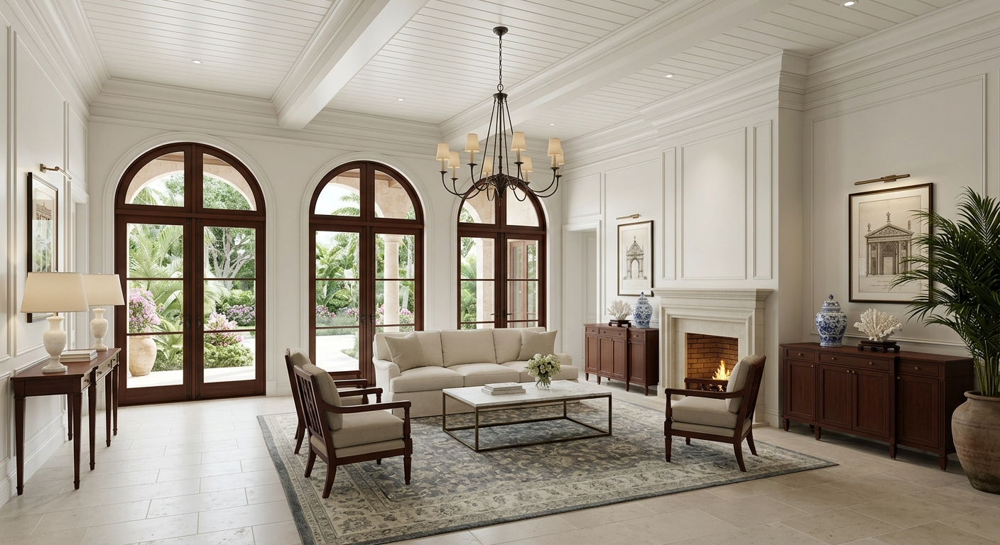
A room looks complete when the surfaces, fixtures, trim, hardware, lighting, flooring and built elements appear to belong together.
Behind that apparent simplicity is a large material and professional world: manufacturers, mills, workshops, fabricators, designers, architects, installers, trades, showrooms, specifications, materials and accumulated knowledge.
FINISH follows that world.
The subject is not decorating advice and not a catalog of products. It is the annual material record of how buildings become finished environments.
Each edition establishes another point in that continuing record as materials, manufacturers, techniques, companies and design practices change.
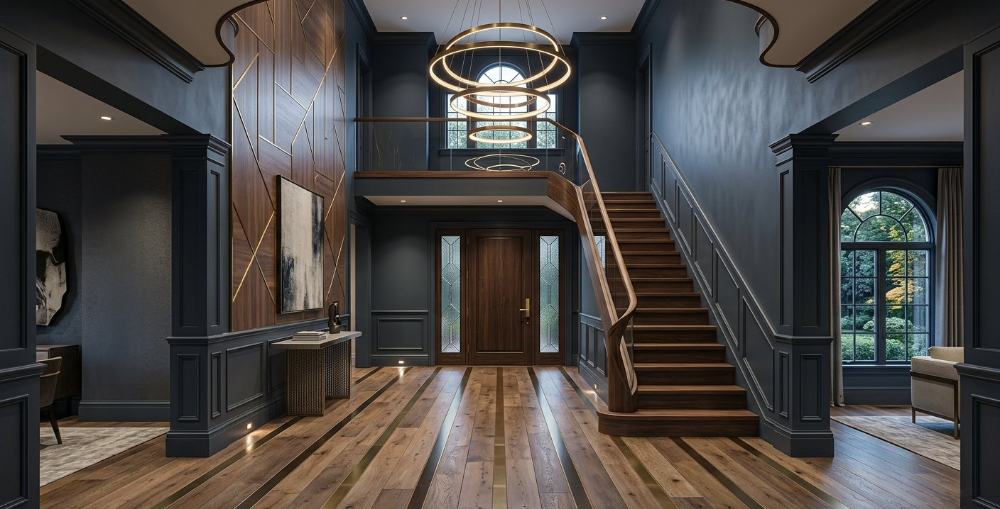
What the material is, where it comes from, how it is made, and why it behaves the way it does.
The mills, factories, workshops, machines and skilled hands behind the finished surface or component.
How architects, designers, fabricators and trades actually specify, combine, install and live with the material.
Each annual edition records what has entered, changed or remained in the material world of architectural finishing.

Pigments, binders, plaster, texture, preparation, application, repair, finish and the techniques behind the surface.
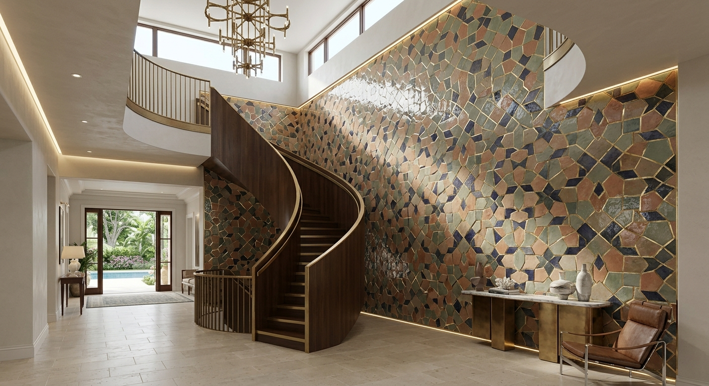
Clay, stone, slabs, cutting, glazing, setting, grout, pattern, fabrication and the systems that bring hard surfaces into a room.
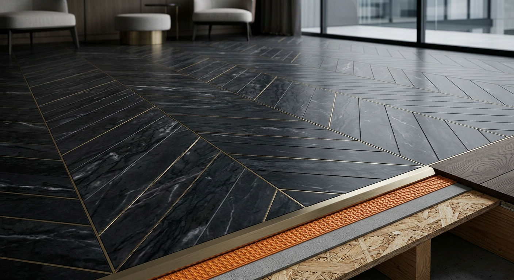
Wood, stone, resilient materials, carpet, installation systems, thresholds, transitions and the construction beneath the finished floor.
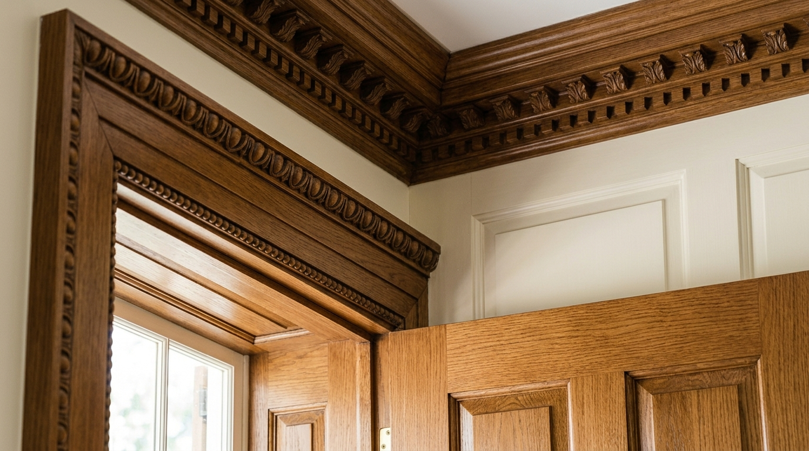
Lumber, veneer, joinery, cabinetry, moulding, built-ins, stairwork and the specialized shops that turn wood into architecture.
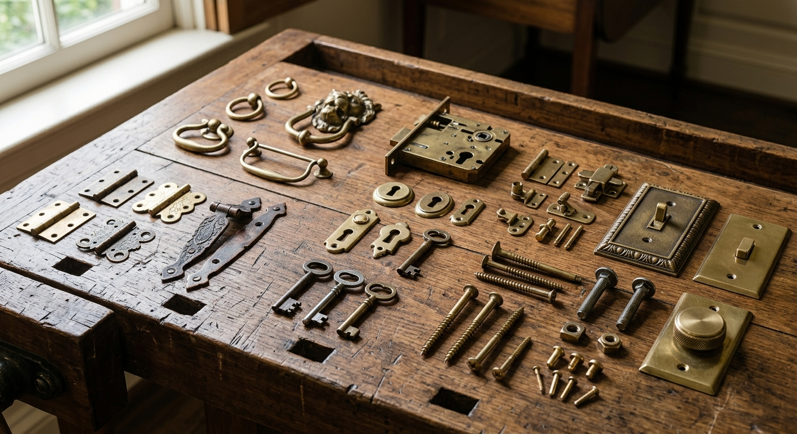
Hinges, pulls, locks, handles, switch plates, fittings, fasteners and the small engineered objects that complete the room.
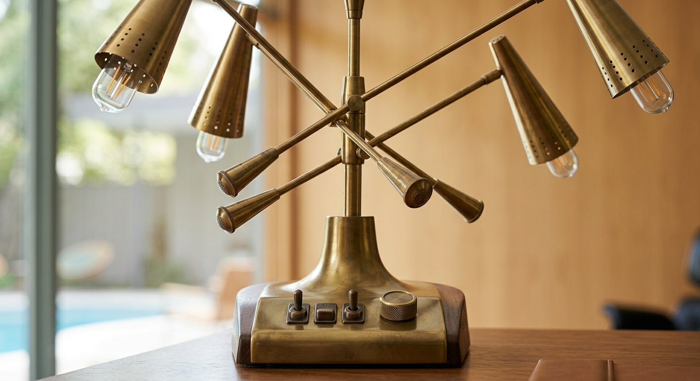
Lighting, plumbing fixtures, electrical components, controls and the technical systems that become part of the finished environment.
Where the physical substance begins.
What manufacturing does to the material.
The engineered object that enters the professional market.
How the object becomes part of a project.
The adaptation required for the particular building.
The work that puts the material into place.
The junctions, edges and decisions that determine the result.
The finished environment in which the system finally disappears from view.
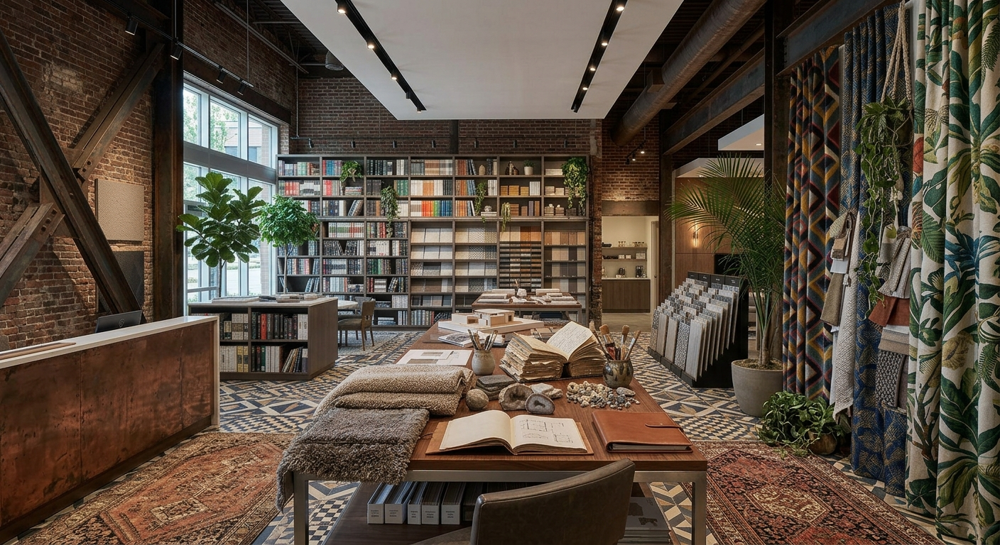
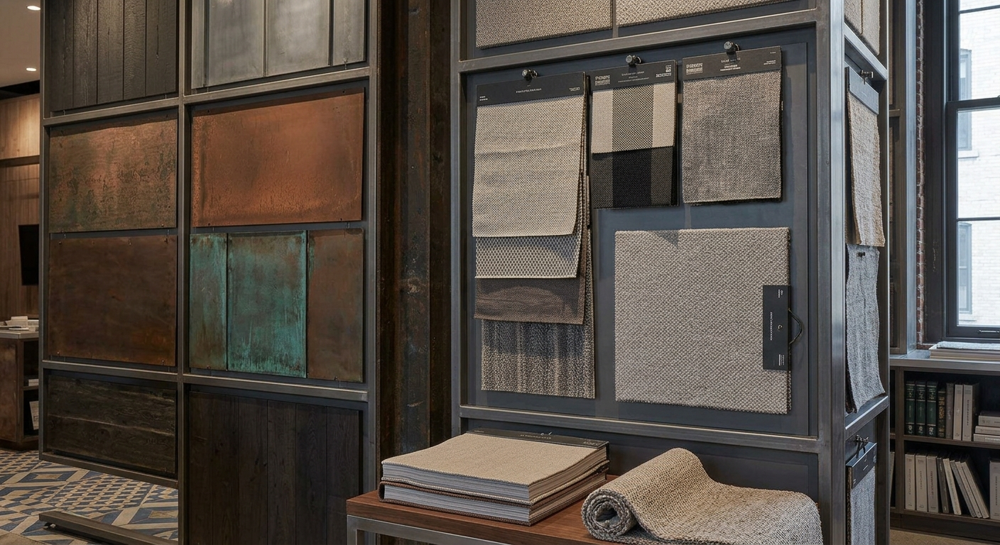
A showroom can display a material beautifully. A design center can put hundreds of materials in front of a professional. A specification library can make a product available to a project.
But none of those things necessarily preserves the larger story: how the material is made, where the knowledge came from, how its construction evolved, which people understand it, and how it became part of the finished environment.
FINISH creates that context in permanent physical form and revisits it through successive annual editions.
Eligible manufacturers, mills, fabricators, material companies, showrooms, specialist trades, craftsmen, suppliers, restorers and other participants may be formally identified within the annual edition. The listing establishes the organization, specialty, material, location or relevant professional identity within the documented world. Participation does not determine editorial conclusions.
Participants may provide access to factories, workshops, showrooms, facilities, collections, archives, historical material, technical information, product histories and knowledgeable specialists that strengthen the record.
Paint, plaster, tile, stone, wood, flooring, carpet, wallcoverings, countertops and other architectural surfaces may enter the record according to their material and professional significance.
Cabinetmakers, millworkers, architectural woodworkers, stone fabricators, metalworkers, glass companies and specialty shops form part of the manufacturing and craft record.
Hinges, handles, locks, pulls, fittings, switch plates, door systems, lighting, plumbing fixtures, controls and other engineered details may enter the annual field.
The professional places where materials are compared, specified, selected, presented and connected to actual architectural projects are part of the material ecosystem.
Specialists preserving historic materials, traditional techniques, architectural details and knowledge that modern production may no longer retain may also belong in the annual record.
Companies and individuals with rare technical knowledge, unusual fabrication capabilities, historical expertise or material specialization may enter the record where their knowledge materially strengthens the publication.
FINISH is conceived as a recurring annual publication rather than a one-time survey. Each edition establishes a new documentary snapshot while retaining continuity with the material field already examined.
Each edition identifies a selected group of manufacturers, specialists, showrooms, craftsmen, suppliers, restorers and other material-world participants whose work belongs within that year's record.
New companies, materials, techniques, technologies, workshops, showrooms, processes and specialists may enter subsequent editions as the professional world of architectural finishing develops.
Each annual edition adds another layer to the larger documentary history: a continuing record of materials, manufacturing, craft, specification, installation and the companies that make finished environments possible.
A commissioned documentary treatment developed around a company's material, manufacturing process, history, people, facilities, archive and place within the larger world of architectural finishing. Research, interviews, fieldwork, photography production, archival work and editorial development are scoped to the undertaking. The resulting material may contribute to a broader documentary record.
A separate commissioned documentary record devoted specifically to a company, material, workshop, manufacturing history or specialized practice. The resulting publication can become a permanent institutional record of the organization and the knowledge behind its work.
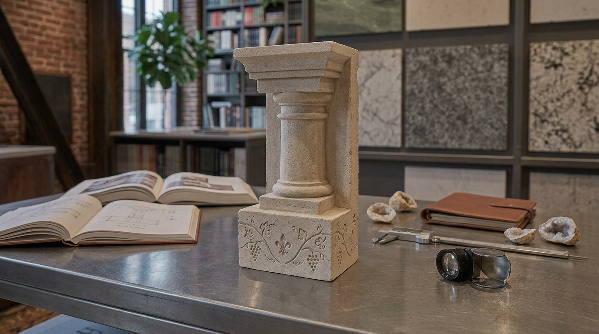
History, terminology, manufacturers, chronology, archival sources and primary evidence establish the material and its development.
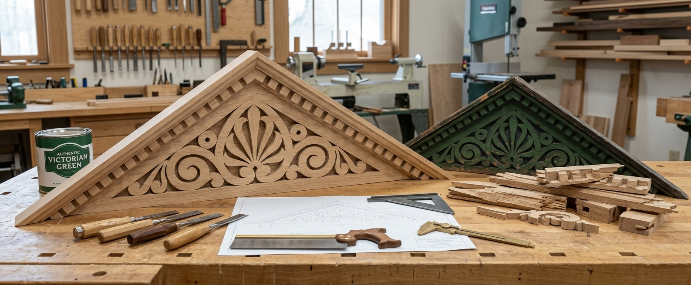
Mills, factories, workshops, showrooms, fabrication spaces and job sites where the material exists in working form.
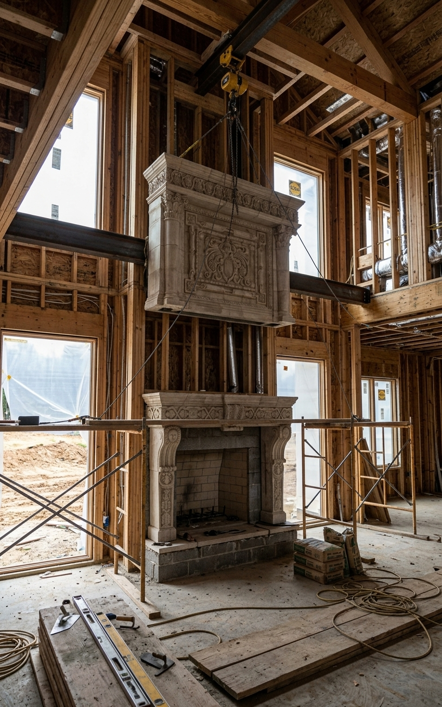
The tools, sequencing, tolerances, skilled work and decisions that transform a manufactured component into an architectural element.
A FINISH edition begins with documentation and may move across research, fieldwork, interviews, photography, archival material, technical evidence, process documentation and publication.
The resulting record can preserve the knowledge behind a material or company: how something was made, who knew how to make it, how the process changed, what the workshop contained, what the older photographs showed, and how the finished object finally entered architecture.
For a company, that record can become a durable institutional resource independent of any single marketing campaign, showroom installation or product cycle.
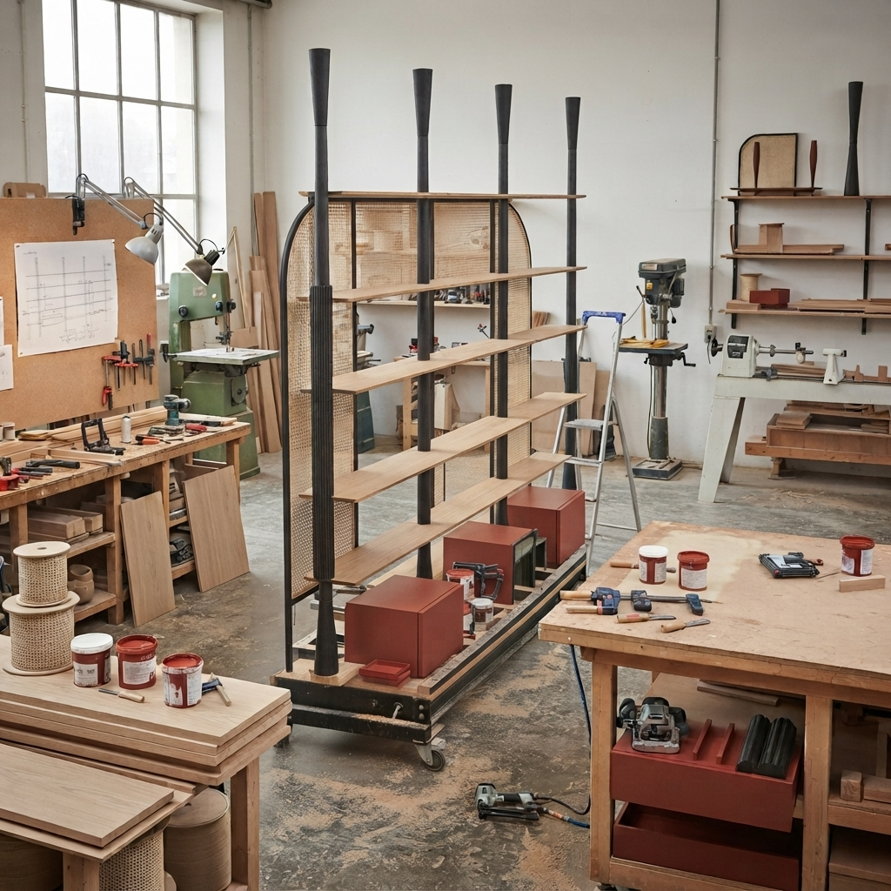
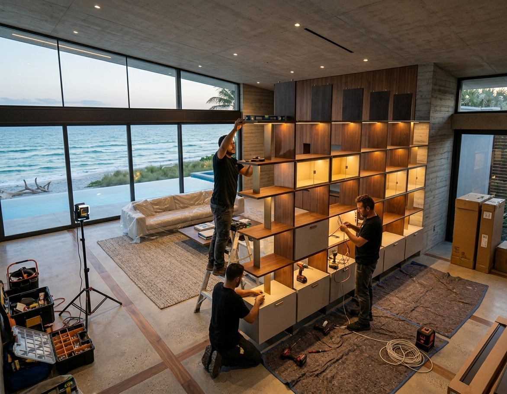
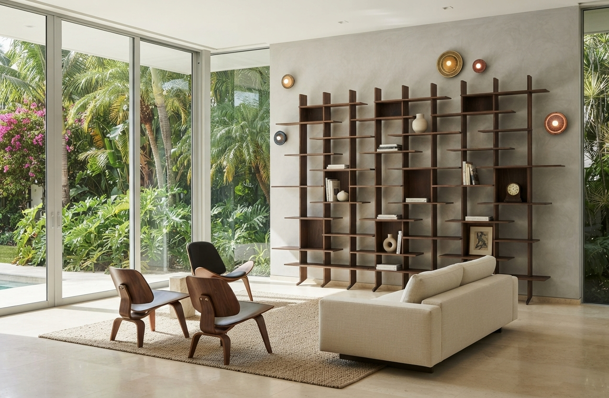
Each annual FINISH edition brings together materials, manufacturers, craftsmen, processes, technologies, historical evidence, working environments and finished interiors into one coherent documentary record.
It is intended to be useful to the people already involved in this world: manufacturers, architects, designers, fabricators, showrooms, students, libraries, archives and institutions.
The publication is not a catalog of products and not a ranked guide. It is a documentary record of the systems behind finished interiors.
The annual format also gives the publication a memory. Individual companies, materials, workshops, collections and techniques may appear again as their stories develop.
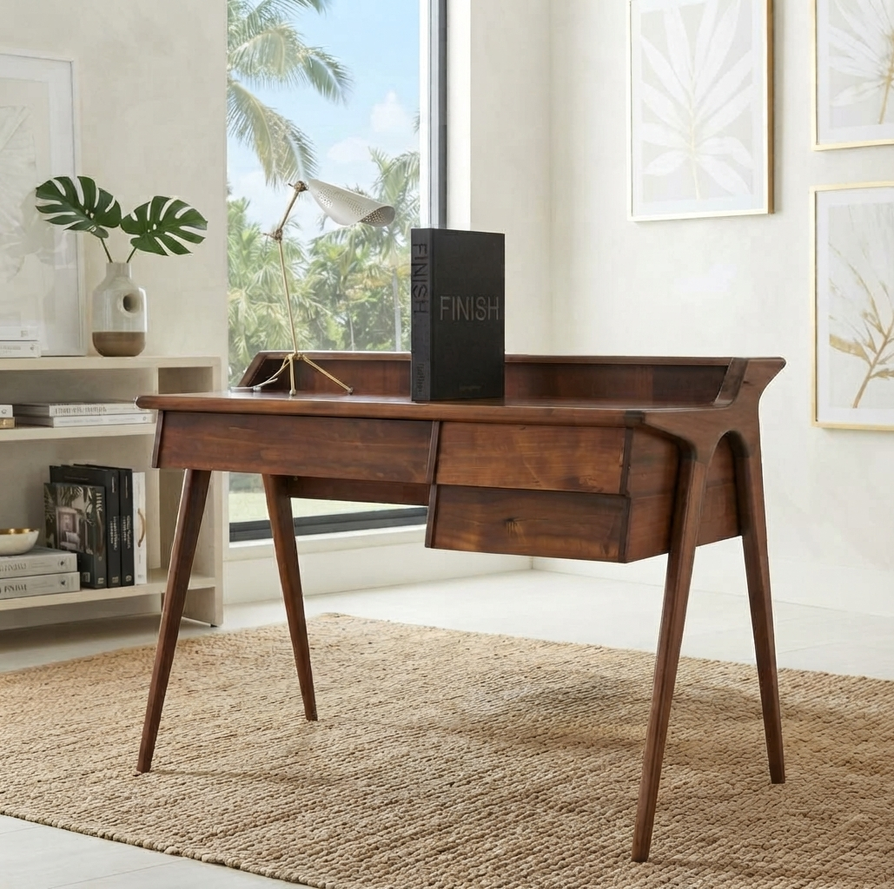
The images presented on this website are not necessarily the photographic record of the FINISH publication.
Website imagery may include original photography, hand-drawn and digitally constructed illustrations, photographic composites, interpretive reconstructions, publication mockups, and images created or modified with generative image tools. These visuals are used to establish atmosphere, subject, material context and the intended character of the publication.
Where appropriate, captions identify images as documentary photography, composite, illustration, reconstruction or mockup.
The FINISH book is different. Images published in the physical annual will be real photographic or archival images of actual materials, facilities, processes, people, places and finished interiors. Generative imagery will not be used as documentary evidence in the book.
The distinction is intentional: the website presents the project; the book records the material world.
We are identifying manufacturers, mills, fabricators, showrooms, architectural-material companies, craftsmen, restoration specialists, suppliers, designers and institutions whose work forms part of the finished interior.
Eligible organizations may participate in the annual record through editorial listing, access and knowledge, and—where appropriate—deeper documentary work of their own.